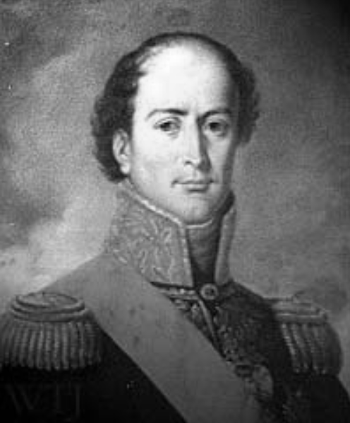
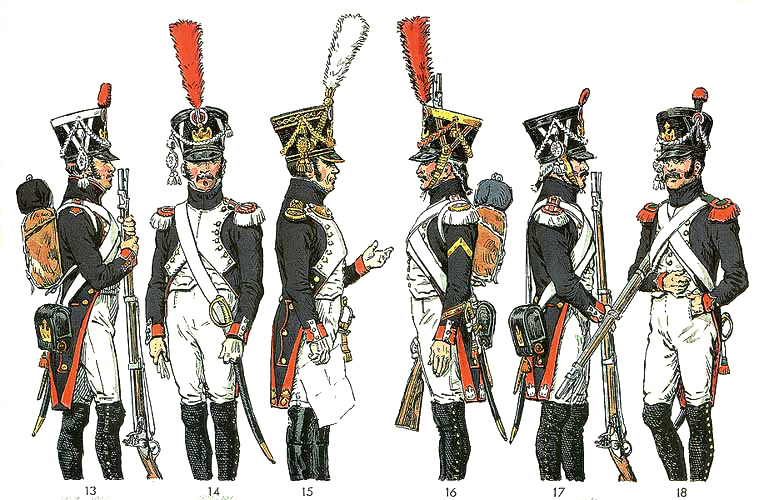
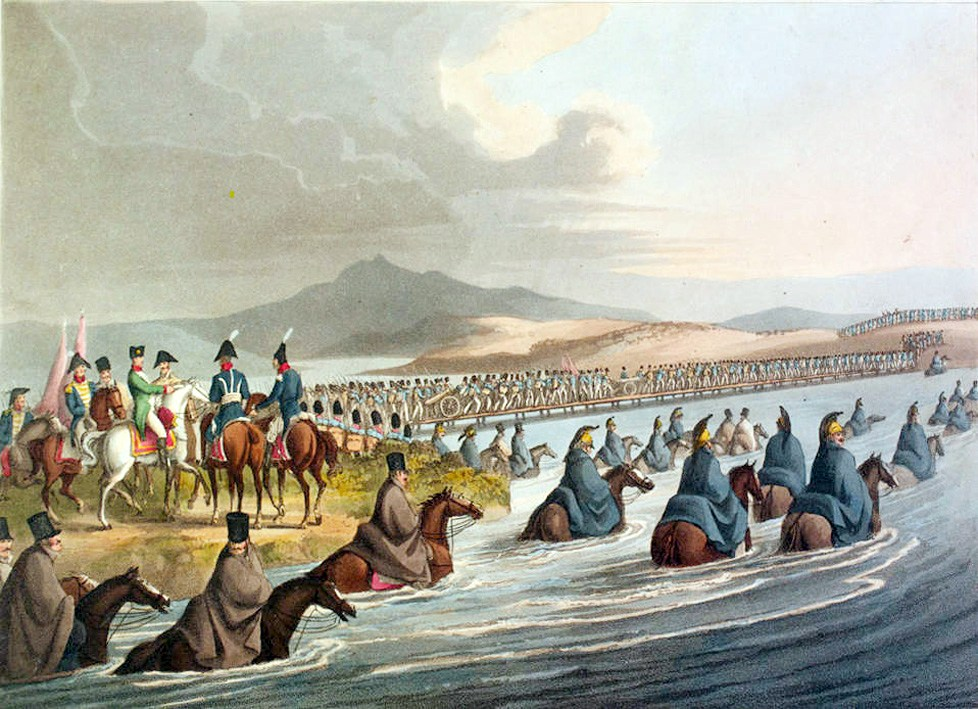
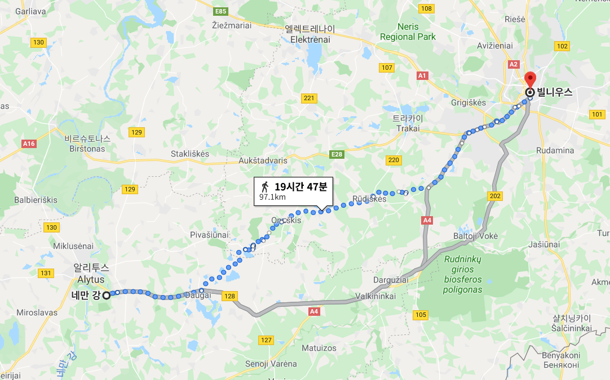
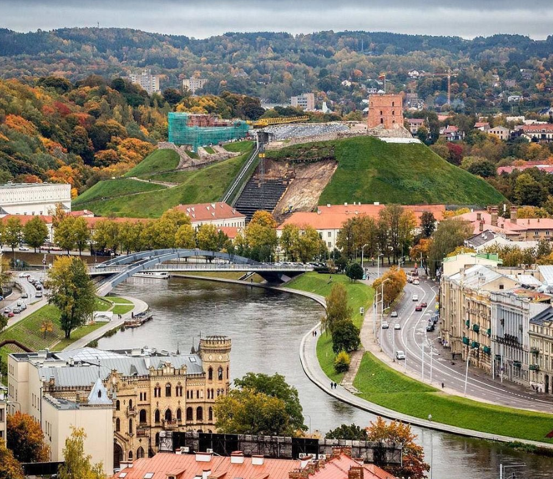

1812년 전쟁의 시작 - 네만 강을 넘다
게시: 2019-11-25T06:30:36+09:00
6월 23일 아침, 나폴레옹은 미리 준비해둔 감동스러운 연설을 통해 '제2차 폴란드 전쟁'이 시작되었으며 이 전쟁을 통해 지난 50년 간 러시아가 유럽에 보여주었던 오만한 영향력을 분쇄할 것이라고 병사들에게 선포했습니다. 당연히 병사들은 'Vive l'Empeurer !'를 외치며 호응했고, 나폴레옹을 속으로 싫어하던 장교들과 병사들마저도 그 광경에는 감탄해마지 않았습니다. 그 날 저녁부터 나폴레옹은 소수의 부하들만 데리고 네만 강가를 달리며 적절한 도하 장소를 물색했고, 마침내 밤 10시에 제13 경보병 연대가 보트를 이용하여 어둠 속에 조용히 강을 도하했습니다. 네만 강 동쪽 강변을 장악한 이들의 엄호 속에서 에블레(Jean Baptiste Eblé) 장군의 공병대가 3가닥의 부교를 놓기 시작했습니다.

(에블레 장군입니다. 이 분이 유명한 것은 네만 강을 건널 때보다는 베레지나 강을 건널 때의 공적 때문입니다. 생각해보니 나폴레옹의 러시아 침공은 이 분이 시작해서 이 분이 끝냈군요.)
프랑스군과 대치하고 있던 러시아군은 평소에도 주기적으로 네만 강변을 정찰하며 프랑스군의 도하를 경계하고 있었습니다. 작업이 한창인 어둠 속에서, 마침내 한 무리의 러시아 경기병 정찰대가 제13 경보병 연대의 경계선 앞에 나타났습니다. 앞에 누군지는 모르겠으나 일단의 군부대가 진을 치고 있다는 것을 알아챈 러시아군의 지휘 장교는 프랑스어로 수하를 했습니다. "Qui vive ?" (직역하면 Who lives ? 정도이지만 '앞에 누구냐?' 정도의 질문입니다.) 거기에 대해 프랑스 장교의 답변은 이랬습니다. "France !" (글자 그대로 '프랑스다 !' 네요. 왠지 멋있는 답변인데요?) 연이어서 욕지꺼리들과 함께 프랑스군이 일제 사격을 하면서 이 짧은 만남은 끝나버렸습니다. 나폴레옹도 이 머스켓 일제 사격 소리를 듣고 짜증을 냈다고 합니다. 나폴레옹은 가능한 한 조용히 강을 건너고 싶었거든요. 하지만 더 이상의 소란 없이 작업은 착착 진행되었고, 나폴레옹은 다시 막사로 돌아가 2시간 정도 토막잠을 잘 수 있었습니다. 새벽 무렵 이 부교들이 완성되자, 나폴레옹이 주변 언덕에 올라 한 손은 뒷짐을 진 채 다른 한 손으로 쥔 망원경을 통해 바라보는 가운데 다부 휘하의 사단들이 제일 먼저 이 부교들을 통해서 다리를 건너기 시작했습니다. 이렇게 그랑다르메가 3량의 다리들을 통해 강을 건너 러시아 땅으로, 좀 더 정확하게는 러시아령 리투아니아 영토로 행군해 들어가는 모습은 대단히 장엄한 모습이었습니다. 원래 프랑스군의 정장 군복은 멋있기는 해도 그다지 편한 옷은 아니었기 때문에, 긴 행군에 나설 때면 정장 군복은 돌돌 말아 배낭 속에 집어넣고 좀더 편하고 헐렁한 셔츠 및 회색 바지와 가벼운 모자 차림으로 다니는 것이 보통이었습니다. 이 극적인 날을 위해 병사들은 전투에 나설 때처럼 정장 군복을 차려입고 다리를 건넜기 때문에 그랑다르메의 도하는 더욱 볼 만한 광경이었습니다.

(프랑스 근위대의 군복입니다. 도저히 활동성이 좋은 의복이라고는 할 수 없지요. 그래도 전투에 나설 때 저런 복장으로 나서면 확실히 사기는 좀 오를 것 같기는 합니다.)

(네만 강을 건너는 그랑다르메의 모습입니다.)
나폴레옹의 목표는 당연히 러시아 제1 군의 총사령부이자 알렉산드르의 임시 행궁이 있던 빌나(Vilna)였습니다. 나폴레옹은 전쟁 시작 전에 '목표는 일단 스몰렌스크다, 거기서 러시아의 식량을 먹으며 러시아 비용으로 겨울을 나면서 알렉산드르를 압박하겠다' 라고 했다가 다음 번에는 '목표는 모스크바다, 모스크바가 러시아의 심장이다' 라고 하기도 했습니다. 이렇게 나폴레옹도 오락가락 했던 것은 러시아가 워낙 넓은데다 아무래도 수비적인 태세였던 알렉산드르가 결전을 회피하고 계속 후퇴하면 어쩌나 하는 걱정이 있었기 때문이었습니다. 그런데 5월 들어 나폴레옹에게 들어온 정보 중에 아주 좋은 것이 있었습니다. 알렉산드르가 빌나에 왔다는 것입니다. 이건 분명히 러시아가 국경에서 물러나지 않고 그랑다르메의 침공에 맞서 싸우려 한다는 뜻으로 받아들여졌습니다. 빌나라면 네만 강을 건너 불과 2~3일이면 닿을 수 있는 거리였습니다. 나폴레옹은 기습적으로 강을 건너 빌나를 들이친다면, 잘 하면 러시아 제1 군을 격파하고 아우스테를리츠에서 그랬던 것처럼 알렉산드르를 다시 한번 무릎 꿇릴 수도 있겠다 싶었습니다. 물론 40만 대군이 강을 건너는데 러시아군이 눈치를 채지 못할 리가 없었습니다. 6월 23일 밤의 일제 사격은 결국 필연적인 것이었습니다. 이 소식을 들고 미친 듯이 말을 달린 러시아군 전령이 빌나에 들어온 것은 24일 밤 자정이 넘은 뒤였습니다. 하필 이 날 밤은 빌나에 있던 베니히센(Levin August von Bennigsen)의 저택에서 알렉산드르를 위한 무도회가 있던 밤이었습니다. 이 날 짜르는 베니히센의 와이프 및 바클레이의 와이프 등과 인사치레의 춤을 같이 춘 뒤 빌나 사교계 최고의 미인 몇 명과 춤을 추고 기분이 좋은 상태였습니다. 그런 그에게 조용히 신하가 접근하여 귓속말을 전했고, 알렉산드르는 무도회 분위기를 깨지 않고 조용히 자리를 비웠습니다.

(나폴레옹이 정확하게 네만 강 어디를 건넜는지는 모르겠습니다만, 아무튼 빌나와 네만 강은 그다지 먼 거리가 아니었습니다.)
당장 새벽부터 주요 참모들과 장관들이 새벽잠을 설치고 이리저리 뛰어다녀야 했습니다만, 급히 소집된 회의에서 아무도 뭘 어떻게 해야할지 모르는 것 같았습니다. 이건 사실상의 총사령관 역할을 자임하고 있던 알렉산드르의 잘못이었습니다. 여태까지 여러가지 안을 손에 쥔 채 아무 것도 정하지 못하고 머뭇거렸던 것이 바로 그였으니까요. 장기 주둔을 위한 식량과 물, 숙소 등의 문제 때문에 러시아 제1 군은 네만 강변 곳곳의 마을에 넓게 분산되어 있었기 때문에 러시아군은 당장 벌어진 프랑스군의 침공에 제대로 대응을 할 수가 없었습니다. 이제 방어든 공격이든 뭐라도 해보려면 당장 병력을 집결시켜야 했는데, 그러려면 적어도 며칠이 필요했습니다. 그러나 프랑스군은 당장 이틀 안에 빌나 코 앞에 나타날 거리에 있었습니다. 이런 상황에서 러시아군이 할 수 있는 것은 단 하나, 후퇴였습니다.
한편, 나폴레옹이 네만 강을 건넜다는 소식은 빌나 시내에 삽시간에 퍼졌습니다. 젊은 러시아 장교들은 주먹을 불끈 쥐고 '전쟁이다 !'를 외치며 기뻐했습니다. 이들은 당장이라도 프랑스군과 결전을 벌이고 빛나는 승리를 거둘 것 같은 기세였습니다. 하지만 당장 이들에게 내려진 명령은 '퇴각'이었습니다. 장교들의 낙담과 분노는 가히 짐작할 만 했습니다. 그들 중 아무도 자신들이 전투 준비가 되어있지 않다는 것조차 제대로 이해를 못 했기 때문에 더욱 그랬습니다. 그리고 프랑스군은 결코 만만한 존재가 아니었습니다. 프랑스군이 이틀이면 빌나에 나타날 거라고들 했지만, 당장 그 다음날인 6월 26일 아침 일찍, 프랑스군 기병대가 빌나 인근에 나타났다는 소식이 날아들었습니다. 일이 이렇게 되자 당장 알렉산드르의 용기는 어디론가 날아가버렸습니다. 알렉산드르는 약간 창피할 정도로 서둘러 빌나를 빠져나갔고, 이 소식이 알려지자 빌나는 일대 공포와 혼란 속에 빠져들었습니다. 이 와중에 그래도 침착함을 유지한 것은 바클레이였습니다. 그는 질서있게 부대들에게 퇴각 명령을 내리고 빌나에 접한 네리스(Neris) 강에 놓인 다리를 파괴했을 뿐만 아니라, 최근 몇 달간 빌나 시내로 열심히 끌어모았던 군수품과 식량에도 불을 질렀습니다.

(빌나, 아니 빌니우스(Vilnius)의 모습입니다. 꽤 아담하면서도 아름다운 도시같네요.)
2일 후인 6월 28일, 나폴레옹이 빌나에 입성했을 때까지도 바클레이가 군수품에 질렀던 불은 아직 꺼지지 않은 상태였습니다. 나폴레옹과 함께 빌나에 들어온 다부는 애처가였습니다. 그는 다음날 부인에게 편지를 썼는데, 그 내용은 총 한방 쏘지 않고 러시아군을 몰아내고 리투아니아를 정복한 것에 대해 무척 기뻐하는 것이었습니다. 그러나 어수선한 빌나에 들어와 불과 48시간 전에 알렉산드르가 숙소로 쓰던 주교관에 자리를 잡은 나폴레옹의 생각은 다부와는 달랐습니다. 그는 낙담하거나 실망했다기 보다는 굉장히 혼란스러워 했습니다. 그는 알렉산드르와 러시아군이 이렇게 허겁지겁 도망가버린 것이 이해가 가지 않았습니다. 러시아군이 대군을 빌나까지 전진배치했을 뿐만 아니라 알렉산드르가 최전선까지 나와 군을 통솔하고 있다는 것은 분명히 자신과 대회전을 벌일 각오라는 뜻으로 해석되었는데, 막상 다가가니 러시아군은 어이없게 줄행랑을 쳐버린 것입니다. 많은 군수품에 불까지 지른 것을 보면 뭔가 계획적으로 퇴각을 한 것 같지도 않고 서둘러 도망을 친 것 같았습니다. 그로서는 러시아군의 행동이 이해가 가지 않았습니다. 그는 아직도 러시아가 어떻게 돌아가는 나라인지 제대로 이해하고 있지 못했던 것입니다.
Source : 1812 Napoleon's Fatal March on Moscow by Adam Zamoyski https://en.wikipedia.org/wiki/Jean_Baptiste_Ebl%C3%A9 https://en.wikipedia.org/wiki/Levin_August_von_Bennigsen